placa robotica np07
El hardware np07
caracteristicas tecnicas
bla
listado de componentes
| Cantidad | Componente | Ubicación | imagen |
|---|---|---|---|
| 11 | Resistencias 470 Ohm - 1/4W | R1 R2 R3 R4 R5 R6 R7 R8 R9 R12 R17 | 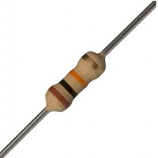 |
| 5 | Resistencias 10k Ohm - 1/4W | R11 R13 R14 R15 R16 |  |
| 2 | Capacitores Cerámicos 22pF | C2 C3 | 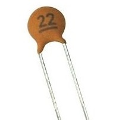 |
| 5 | Capacitores Cerámicos 0.1uF | C9 C10 C11 (C12 C13)* | 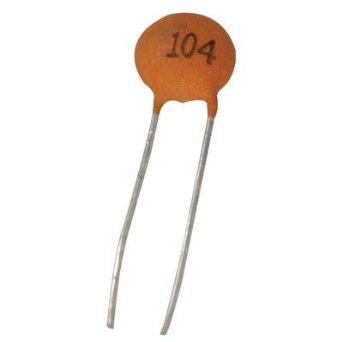 |
| 1 | Capacitor Cerámico 220nF | C1 |  |
| 1 | Capacitor Electrol. 10uF 16V | C5 |  |
| 4 | Capacitor Electrol. 100uF | C4 C6 C7 C8 |  |
| 3 | Diodos 1N4007 | D9 D12 D14 | 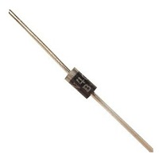 |
| 11 | Leds difusos 5mm | D1 D2 D3 D4 D5 D6 D7 D8 D10 D11 D12 |  |
| 1 | Conector USB hembra Tipo B | J1 | 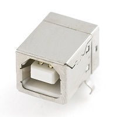 |
{kind=link}
{kind=link}
{kind=link}
{kind=link}
{kind=link}
| Cantidad | Componente | Ubicación | imagen |
|---|---|---|---|
| 1 | Push Button (Soft Touch) | SW2 | 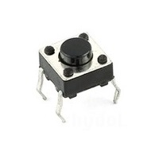 |
| 1 | Regulador de Voltaje LM7805 | U4 |  |
| 1 | Regulador de Voltaje 78L05 | U5 | 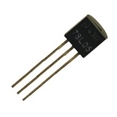 |
| 7 | Borneras Dobles | P8 P9 P10 P11 P12 P13 P14 | 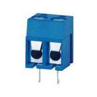 |
| 1 | Zócalo de 8x2 Pines | U3 | 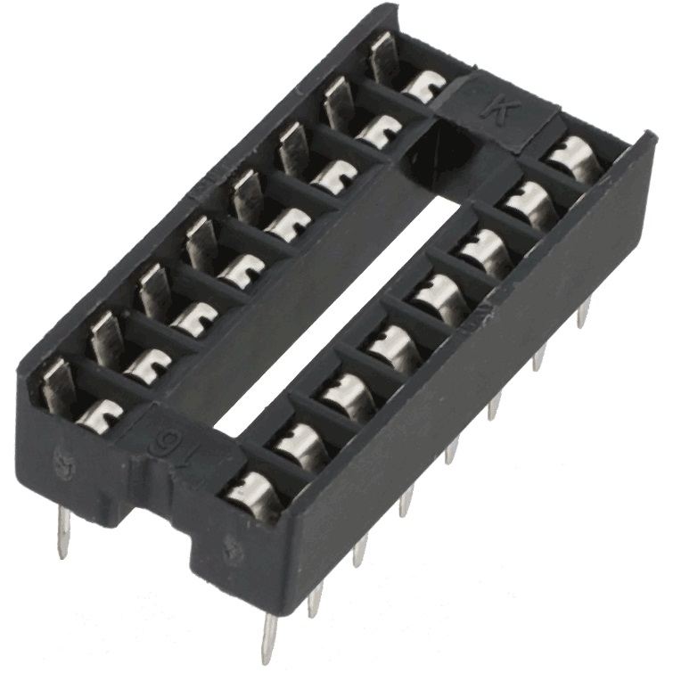 |
| 1 | Zócalo de 20x2 Pines | U2 |  |
| 1 | Zócalo de 9x2 Pines | P6 | 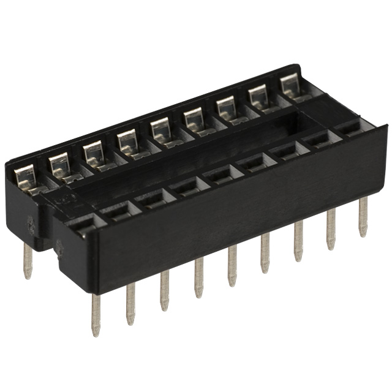 |
| 1 | Cristal de 20Mhz | X1 | 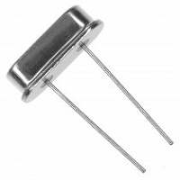 |
| 2 | Tira Postes Macho de 40 Pines | K2 K3 K4 K5 K6 SW1 SW3 K1 K8 P4 | 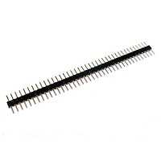 |
| 1 | Tira de Postes Hembra de 40 Pines | P1 P7 P5 P15 P16 P17 P18 |  |
| 1 | Driver L293D (Puente H) | U3 | 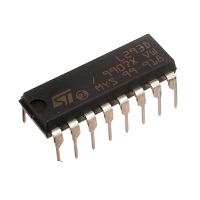 |
| 1 | Integrado ULN2803 | P6 | 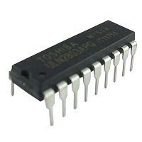 |
| 1 | Microcontrolador PIC18F4550 | U2 | 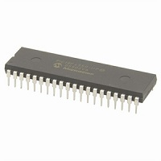 |
| 4 | jumper | SW1 SW3 K1 K8 | 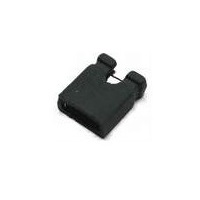 |
{kind=link}
{kind=link}
{kind=link}
{kind=link}
{kind=link}
{kind=link}
{kind=link}
{kind=link}
{kind=link}
{kind=link}
{kind=link}
herramientas
Las herramientas que necesitamos para armar una placa robotica np07 son faciles de conseguir y muy comunes para cualquier hobbista de la electronica.
{kind=link}
Soldador
Un soldador eléctrico o de estaño, también conocido como cautín, es una herramienta eléctrica usada para soldar. Funciona convirtiendo la energía eléctrica en calor, que a su vez provoca la fusión del material utilizado en la soldadura, como por ejemplo el estaño.
{kind=link}
Estaño
El estaño que se utiliza en electrónica tiene alma de resina con el fin de facilitar la soldadura. Para garantizar una buena soldadura es necesario que tanto el estaño como el elemento a soldar alcancen una temperatura determinada, si esta temperatura no se alcanza se produce el fenómeno denominado soldadura fría. La temperatura de fusión depende de la aleación utilizada, cuyo componente principal es el estaño y suele estar comprendida entre unos 200 a 400 ºC.
En realidad, el término “estaño” se emplea de forma impropia porque no se trata de estaño sólo, sino de una aleación de este metal con plomo, generalmente con una proporción respectiva del 60% y del 40%, que resulta ser la más indicada para las soldaduras en Electrónica.
Para realizar una buena soldadura, además del soldador y de la aleación descrita, se necesita una sustancia adicional, llamada pasta de soldar, cuya misión es la de facilitar la distribución uniforme del estaño sobre las superficies a unir y evitando, al mismo tiempo, la oxidación producida por la temperatura demasiado elevada del soldador. La composición de esta pasta es a base de colofonia (normalmente llamada “resina”) y que en el caso del estaño que utilizaremos, está contenida dentro de las cavidades del hilo, en una proporción del 2~2.5%.
{kind=link}
alicate para electronica
Un pequeño alicate, para poder cortar el excedente de material (estaño, alambres de las resistensias por ejmplo).
{kind=link}
destornillador plano pequeño
Nos sirve para ajustar las borneras y para hacer palanca para sacar un integrado que hayamos puesto en un zocalo.
{kind=link}
desoldador de estaño
El desoldador de estaño, nos permite sacar el estaño que hayamos puesto de mas o para remplazar algun componente efectuoso de la placa robotica np07
fabricacion
A continución veremos el paso a paso del armado de la placa np07.
paso 0

Vista de la Placa
paso 1
{kind=link}
Colocar 5 Puentes
paso 2

Resistencias de 470 Ohm
paso 3
{kind=link}
Resistencias de 10K Ohm
paso 4
{kind=link}
Diodos 1N4007
paso 5
{kind=link}
Cristal de 20MHz
paso 6
{kind=link}
Capacitores Cerámicos 0,1uF
paso 7
{kind=link}
Capacitores Cerámicos 22pF
paso 8
{kind=link}
Capacitor Cerámico 220nF
paso 9
{kind=link}
Regulador LM7805
paso 10

Regulador 78L05
paso 11
{kind=link}
Colocar Zócalos
paso 12

Push Button
paso 13
{kind=link}
Colocar LEDS
paso 14
{kind=link}
Capacitores Electrolíticos 100uF
paso 15
{kind=link}
Capacitor Electrolítico 10uF
paso 16

Postes Macho
paso 17
{kind=link}
Postes Hembra
paso 18
{kind=link}
Borneras
paso 19
{kind=link}
Conector USB hembra B
paso 20
{kind=link}
Capacitores Cerámicos 0,1uF